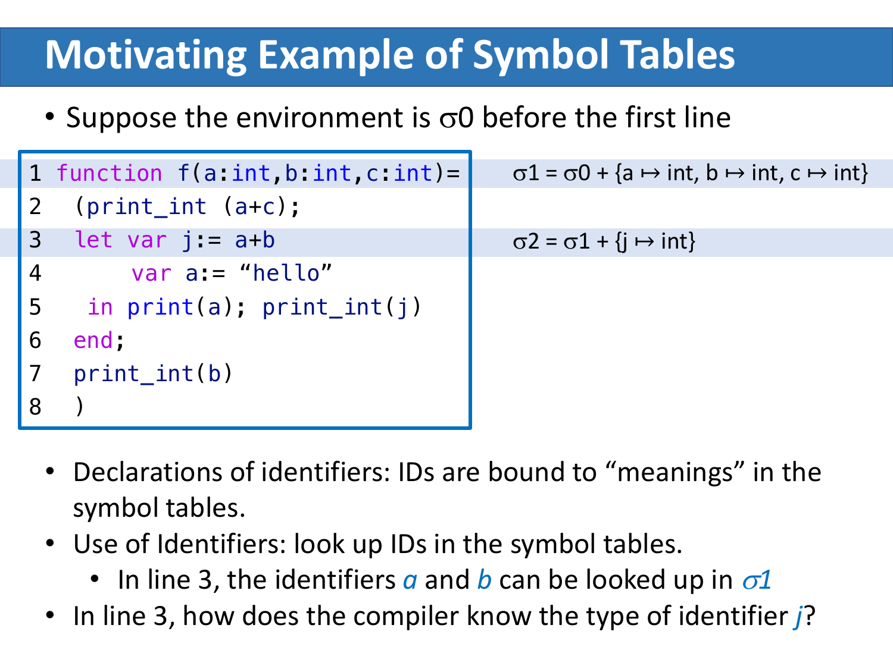
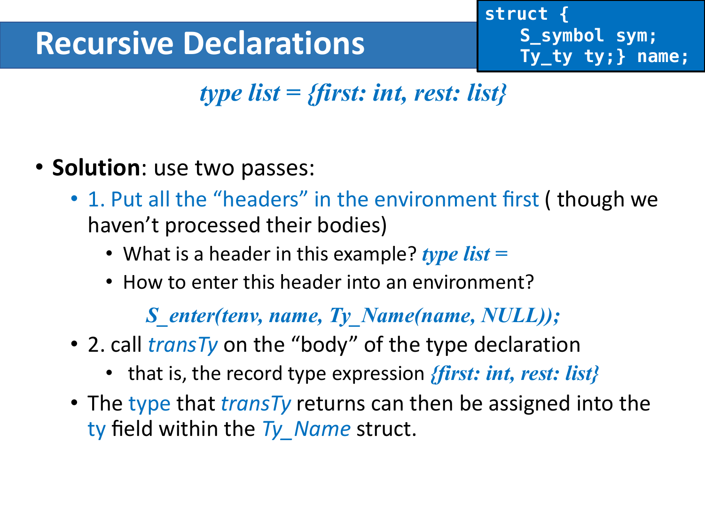

Chapter 5: Semantic Analysis¶
约 3383 个字 118 行代码 2 张图片 预计阅读时间 13 分钟
语义分析 (Semantic Analysis) 处在语法分析之后、IR 生成之前。到这一阶段，编译器已经知道输入程序的短语结构，但还不知道这些短语在语义上是否成立，例如变量是否声明、表达式类型是否匹配、递归类型是否合法、函数调用是否满足形参与返回值约束。
CFG 只能告诉我们“长得像不像一个句子”，但不能告诉我们“这个句子在程序语言里有没有意义”。
Why Semantic Analysis¶
先看一个典型例子：
从纯语法角度看，它完全可能满足某个表达式文法；但从语义角度看，x + 1 明显不合法，因为 x 是字符串而不是整数。
因此，很多重要性质都不能只靠 CFG 判断：
- 变量是否先声明后使用。
- 表达式两侧的类型是否兼容。
- 函数实参与形参是否匹配。
- 递归类型是否合法。
- 标识符在当前作用域中到底绑定到哪个定义。
语义分析阶段通常承担两类任务：
- 基于 AST 推出程序的静态性质。
- 把 AST 翻译成更适合后端处理的中间表示。
Symbol Tables¶
Binding, Environment, Scope¶
语义分析最基本的动作，是把一个名字绑定到某种“含义”上。
例如：
- 类型标识符
int绑定到某个类型对象。 - 变量标识符
x绑定到“类型 + 存储信息”等属性。 - 函数标识符
f绑定到“形参类型列表 + 返回类型”。
这种映射关系称为 binding，记作：
多个 binding 组成 environment，environment 的具体实现就是 symbol table。
Definition
Binding: 给一个符号赋予含义。Environment: 一组当前生效的 binding。Symbol Table: environment 的实现结构。
作用域 (scope) 则描述了“这个 binding 在程序的哪一段区域内可见”。
例如在 let ... in ... end 中，进入 let 体时会扩展环境，离开 end 时再恢复旧环境。

- 读到声明时，把新名字加入环境。
- 读到使用时，在当前环境里查找该名字。
- 离开作用域时，丢弃该作用域内新增的 binding。
Shadowing¶
如果内层作用域重新声明了同名标识符，那么新绑定会遮蔽旧绑定：
在内层环境中，a 绑定到 string，而不是外层的 int。这说明：
X + Y不是交换的。- 右侧新加入的 binding 会覆盖左侧已有 binding 的可见性。
Symbol Table Needs¶
一个可用的符号表至少要支持四个操作：
insert: 插入新 binding。lookup: 查询名字当前对应的属性。beginScope: 进入新作用域。endScope: 退出作用域并恢复旧环境。
如果语言有模块、类、记录等结构，还可能同时存在多个活跃环境。此时“一个程序只有一张符号表”就不够了，更准确的说法是：
- 每个命名空间或结构单元都可能有自己的局部环境。
- 语义分析器需要知道当前在哪个环境中查找名字。
Multiple Symbol Tables¶
当语言支持 package、class、module 这类封装结构时，符号表的使用方式需要从“单个作用域栈”扩展成“多层环境嵌套”。
- 类内部成员放在该类自己的 symbol table 里。
- 外层包或模块环境不直接保存每个成员，而是保存“类名 -> 该类的局部环境”。
- 形如
E.a的访问，本质上是先查到E对应的类环境，再在这个局部环境里查找a。
例如：
package M;
class E {
static int a = 5;
}
class N {
static int b = 10;
static int a = E.a + b;
}
class D {
static int d = E.a + N.a;
}
每个类一张表，包 M 再维护一张更外层的表”：
flowchart TD
P["package M"] --> E["class E"]
P --> N["class N"]
P --> D["class D"]
E --> EA["a : int"]
N --> NB["b : int"]
N --> NA["a : int"]
D --> DD["d : int"]这里的含义是：
- 分析
E.a时，先在包环境里查E，得到σ1，再在σ1中查a。 - 分析
N.a时，先查N，得到σ3，再在σ3中查a。
对于 Java 这种允许前向引用的语言，一个常见做法是先收集所有类头部，形成包级环境，再分别分析类体。这样在分析 D 时，即使 N 的定义写在前面或后面，N.a 仍然能通过包环境被解析到。
How To Implement Symbol Tables¶
实现方式分成两种风格：命令式 (imperative) 与函数式 (functional)。
Imperative Style¶
命令式风格直接修改当前符号表：
- 进入作用域时，往表里插入新 binding。
- 退出作用域时，利用辅助信息撤销这些插入。
优点是实现直接；缺点是旧环境被破坏，恢复必须依赖额外机制。
在 Tiger 编译器的 C 实现中，环境使用的是 destructive-update 风格。
Hash Table with External Chaining¶
因为标识符可能非常多，lookup 必须足够快，所以常见实现是散列表加链地址法：
插入时把新结点挂到桶链表表头，这样天然支持“新 binding 遮蔽旧 binding”：
void insert(string key, void *binding) {
int index = hash(key) % SIZE;
table[index] = Bucket(key, binding, table[index]);
}
“数组 + 桶链表”：
flowchart LR
subgraph HT["Hash Table"]
T0["table[0]"]
T1["table[1]"]
Ti["table[i]"]
Tn["table[n]"]
end
Ti --> B1["<a, string>"]
B1 --> B2["<a, int>"]
B2 --> B3["<b, int>"]这里真正保存 binding 的不是数组槽位本身，而是槽位指向的链表。哈希冲突的元素会挂在同一个桶里，而同名标识符的新旧绑定也可以借助“头插法”自然叠起来。
如果原来已经有：
再插入：
桶里会变成：
lookup(a) 只会先看到新的 string 绑定。等当前作用域结束后，pop 掉表头，就能恢复旧环境。
flowchart LR
Before["插入前"] --> OldHead["hash(a)"]
OldHead --> Old1["<a, int>"]
Old1 --> Old2["<...>"]
Insert["insert(a, string)"] --> NewHead["hash(a)"]
NewHead --> New1["<a, string>"]
New1 --> New2["<a, int>"]
New2 --> New3["<...>"]因此命令式符号表里“进入作用域”并不需要复制整张表，它只是在对应桶的表头再压入一个更新版本。
如果离开这个作用域，只需把头结点弹掉：
flowchart LR
P1["退出作用域前"] --> H1["hash(a)"]
H1 --> S1["<a, string>"]
S1 --> S2["<a, int>"]
S2 --> S3["<...>"]
Pop["pop(a)"] --> H2["hash(a)"]
H2 --> R1["<a, int>"]
R1 --> R2["<...>"]命令式风格需要“辅助信息”来恢复旧环境: 新 binding 的压入和弹出，本质上是一个按作用域边界管理的栈行为。
Functional Style¶
函数式风格不修改旧环境，而是构造一个新环境：
这样 s 仍然可用，退出作用域时只需回到旧指针即可，不需要“撤销修改”。
但如果直接拿哈希表做纯函数式更新，往往要复制整张数组，成本偏高。因此更适合配合共享结构的搜索树来做持久化环境。
如果用二叉搜索树表示 environment，插入时只需要复制“从根到插入位置”这一条路径，未修改的子树可以直接共享：
flowchart LR
subgraph M1["旧环境 m1"]
R1["dog:3"]
L1["bat:1"]
C1["camel:2"]
R1 --> L1
L1 --> C1
end
subgraph M2["新环境 m2 = m1 + {mouse -> 4}"]
R2["dog:3'"]
L2["bat:1"]
M["mouse:4"]
C2["camel:2"]
R2 --> L2
R2 --> M
L2 --> C2
end更准确地说，m2 中只有根到插入点路径上的结点是“新分配”的，其他未改动的子树都可以继续复用 m1。逻辑上可以理解成下面这种共享关系：
flowchart LR
Root1["m1"] --> D1["dog:3"]
D1 --> B["bat:1"]
B --> C["camel:2"]
Root2["m2"] --> D2["dog:3 (copied)"]
D2 --> B
D2 --> M["mouse:4 (new)"]m1仍然可用，因为它的根指针没变。m2只复制了必要路径，因此不是“整棵树完全拷贝”。- 退出作用域时不需要做
pop，只要回到旧根指针m1即可。
Comparison¶
| 风格 | 进入作用域 | 退出作用域 | 优点 | 代价 |
|---|---|---|---|---|
| 命令式 | 原地插入 | 撤销插入 | 常数小，实现直接 | 需要维护恢复机制 |
| 函数式 | 构造新表 | 回退到旧表 | 旧环境天然保留 | 需要共享结构支撑效率 |
Symbols in The Tiger Compiler¶
工程上的优化：不在符号表中反复比较字符串，把字符串 intern 成 symbol。
Why Symbol Instead of String¶
如果每次 lookup("counter") 都要做字符串比较，会比较慢。更高效的做法是：
- 每个不同字符串只创建一个
S_symbol对象。 - 相同字符串总是映射到同一个
S_symbol。 - 之后比较两个名字是否相等，只需比较指针或整数 key。
这样做的直接收益是：
- 哈希更快。
- 相等判断更快。
- 如果使用搜索树，大小比较也更容易定义。
Tiger 的接口¶
typedef struct S_symbol_ *S_symbol;
S_symbol S_Symbol(string name);
string S_name(S_symbol sym);
typedef struct TAB_table_ *S_table;
S_table S_empty(void);
void S_enter(S_table t, S_symbol sym, void *value);
void *S_look(S_table t, S_symbol sym);
void S_beginScope(S_table t);
void S_endScope(S_table t);
这里 void *value 非常关键，因为同一个表框架需要服务于多种 binding：
- 类型环境里，
value对应Ty_ty。 - 值环境里，
value对应变量或函数条目。
Tiger 把“名字管理”与“名字绑定到什么属性”这两件事分离开了。
Type System in Tiger¶
Tiger 的类型有哪些¶
Tiger 的类型可以分为两层：
- 原始类型：
int、string - 构造类型：
record、array
同时还会在实现里显式表示：
nilvoidname，也就是类型别名或递归类型占位符
内部表示如下：
typedef struct Ty_ty_ *Ty_ty;
struct Ty_ty_ {
enum {
Ty_record, Ty_nil, Ty_int, Ty_string,
Ty_array, Ty_name, Ty_void
} kind;
union {
Ty_fieldList record;
Ty_ty array;
struct {S_symbol sym; Ty_ty ty;} name;
} u;
};
Tiger 的类型检查不是在字符串层面做的，而是在一套显式的类型对象上做的。
Name Equivalence¶
name equivalence vs structural equivalence
-
Name equivalence (NE): T1 and T2 are equivalent iff T1 and T2 are identical type names defined by the exact same type declaration.
-
Structural equivalence (SE): T1 and T2 are equivalent iff T1 and T2 are composed of the same constructors applied in the same order.
Tiger 采用名字等价 (name equivalence)，不是结构等价 (structural equivalence)。
这在 Tiger 中是非法的。因为 a 和 b 虽然结构相同，但它们来自两个不同的类型声明。
而下面是合法的：
因为 b 只是 a 的别名。
Two Namespaces¶
Tiger 有两套名字空间：
- 类型名字空间
- 变量/函数名字空间
所以这段代码是允许的：
两个 a 不冲突，因为它们属于不同 namespace。
这样就不合法了，因为函数 a 和变量 a 冲突了。
Two Environments For Type Checking¶
Tiger 的语义分析维护两张环境表：
Type Environment: tenv¶
tenv 负责：
type symbol -> Ty_ty
例如：
int -> Ty_Int()string -> Ty_String()list -> Ty_Name(...)
Value Environment: venv¶
venv 负责：
- 变量：
symbol -> E_VarEntry(Ty_ty) - 函数：
symbol -> E_FunEntry(formals, result)
typedef struct E_enventry_ *E_enventry;
struct E_enventry_ {
enum {E_varEntry, E_funEntry} kind;
union {
struct {Ty_ty ty;} var;
struct {Ty_tyList formals; Ty_ty result;} fun;
} u;
};
Question
为什么 venv 不直接把变量名映射到“类型名字符串”？
答案是：类型检查最终要比较的是类型对象，而不是表面名字。直接保存 Ty_ty 才能统一处理别名、递归类型与实际类型展开。
The Four Core Semantic Functions¶
Tiger 的语义分析核心由四个递归函数组成：
struct expty transVar(S_table venv, S_table tenv, A_var v);
struct expty transExp(S_table venv, S_table tenv, A_exp a);
void transDec(S_table venv, S_table tenv, A_dec d);
Ty_ty transTy(S_table tenv, A_ty a);
其中：
transVar处理左值。transExp处理表达式。transDec处理声明并更新环境。transTy把语法里的类型描述翻译成内部Ty_ty。
表达式翻译结果通常打包成：
这说明语义分析和 IR 生成在实现上常常是并行推进的：
exp是中间表示。ty是该表达式的静态类型。
Type Checking Expressions¶
Non-overloaded Operators¶
Tiger 的 + 不是重载运算符，因此：
e1 + e2要求e1、e2都是int- 整个表达式结果也是
int
所以 transExp 在处理 A_opExp 时，必须：
- 递归检查左右子表达式。
- 检查两边类型是否满足运算符约束。
- 返回结果类型。
这类规则本质上就是静态语义规则。
L-values¶
Tiger 中的左值包括三种：
也就是：
- 普通变量
- 记录字段
- 数组下标
因此 transVar 要递归判断：
- 这个名字是否存在。
- 被点选时左侧是不是
record。 - 被下标时左侧是不是
array。 - 下标表达式本身是不是
int。
如果变量不存在，编译器通常会报错，但为了不中断后续分析，仍会返回一个默认类型继续向下走。
Type Checking Declarations¶
在 Tiger 中，声明只出现在 let decs in body end 里，所以声明处理本质上就是“进入新作用域并扩展环境”。
case A_letExp: {
struct expty exp;
A_decList d;
S_beginScope(venv);
S_beginScope(tenv);
for (d = a->u.let.decs; d; d = d->tail)
transDec(venv, tenv, d->head);
exp = transExp(venv, tenv, a->u.let.body);
S_endScope(tenv);
S_endScope(venv);
return exp;
}
Variable Declarations¶
对于：
流程是：
- 先检查初始化表达式
exp。 - 得到其类型
e.ty。 - 把
x -> E_VarEntry(e.ty)加入venv。
如果有显式类型约束：
还要额外检查：
- 约束类型与初始化表达式类型是否兼容。
- 若初始化表达式是
nil，则约束类型必须是某种record。
Type Declarations¶
对于：
需要调用 transTy，把语法中的 ty 翻译为内部 Ty_ty，再放入 tenv。
Function Declarations¶
对于：
语义分析至少要做四件事：
- 在
tenv中查到返回类型rt。 - 把形参列表翻译成
Ty_tyList。 - 在
venv中登记f的函数条目。 - 打开函数体局部作用域，把每个形参加入
venv，再检查body。
真正完整的实现还要额外检查：
- 函数体结果是否与声明返回类型一致。
- 是否有重名函数。
- 参数类型是否都存在。
Recursive Declarations¶
Recursive Types¶
考虑：
如果我们试图一步完成翻译，就会遇到悖论：
- 要翻译右侧
{first: int, rest: list} - 就得先知道
list是什么 - 但
list正在被定义，还没进环境
标准解法是两遍处理：

第一遍只登记头部：
这里的 Ty_Name(name, NULL) 只是一个占位符，表示“这个类型名存在，但实体稍后再补”。
第二遍再翻译右侧真正的类型体，并把结果回填到这个占位符中。
Illegal Type Cycles¶
Tiger 还要求：互相递归的类型声明中，每个环都必须经过 record 或 array。
例如下面这种纯别名环是非法的：
因为如果不经过真正的构造子，类型展开永远不会停下来。
Mutually Recursive Functions¶
互相递归的函数也需要两遍处理。例如 f 调 g、g 调 f：
- 如果在检查
f的函数体时，g还没登记进venv，就会报未定义。
因此也必须：
- 第一遍收集所有函数头部信息：函数名、参数类型、返回类型。
- 第二遍在环境完整的前提下检查所有函数体。
递归类型与递归函数本质上是同一个模式：
先把可被引用的“头部信息”放进环境，再检查真正依赖这些头部的“主体内容”。